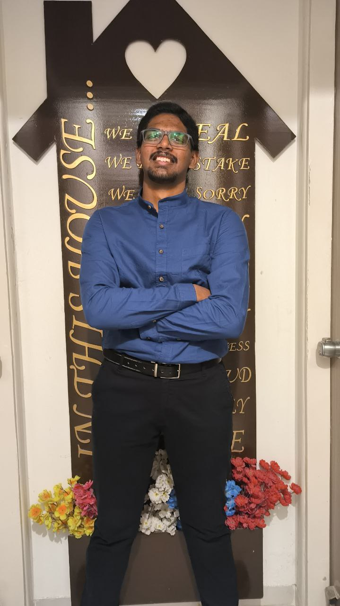

Welcome to my personal portfolio. I'm a Computer Science and Engineering student. I know Cloud Computing
As a computer science student with a keen interest in cloud computing, I am passionate about leveraging technology to drive innovation and efficiency. I hold an AWS Cloud Practitioner certificate, which has given me a strong foundation in cloud services and their applications. My academic journey, combined with hands-on experience in cloud platforms, motivates me to explore new solutions in technology. I am excited about the opportunities that cloud computing offers and am eager to contribute to impactful projects in this space.
In my free time, I love to play Cricket and Table-Tennis. I am also a fan of watching movies and listening to music. I am a strong believer in the importance of lifelong learning and am always looking for opportunities to expand my knowledge.
If you'd like to get in touch with me, please feel free to reach out through any of the following channels:
Apart from coding, I enjoy participating in various extra curricular activities that help me grow both personally and professionally.